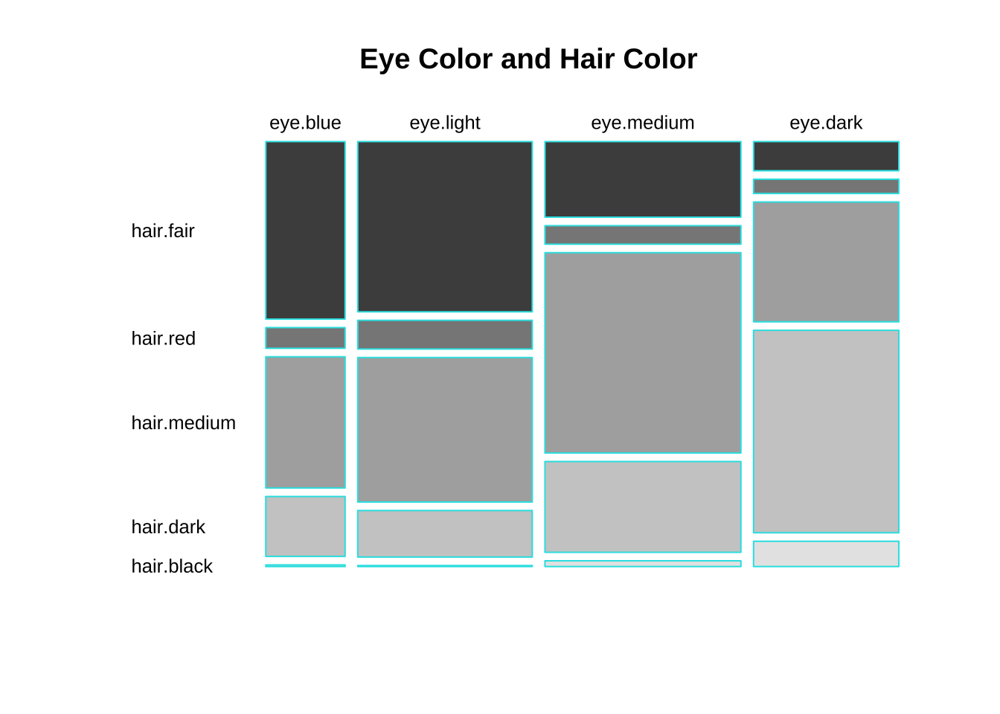
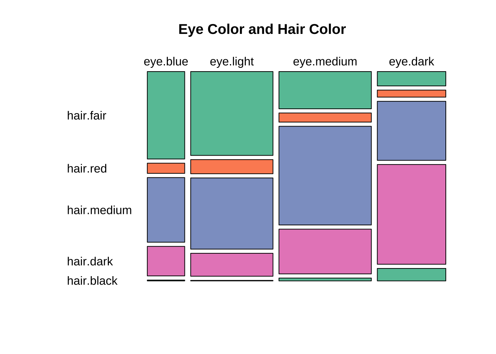
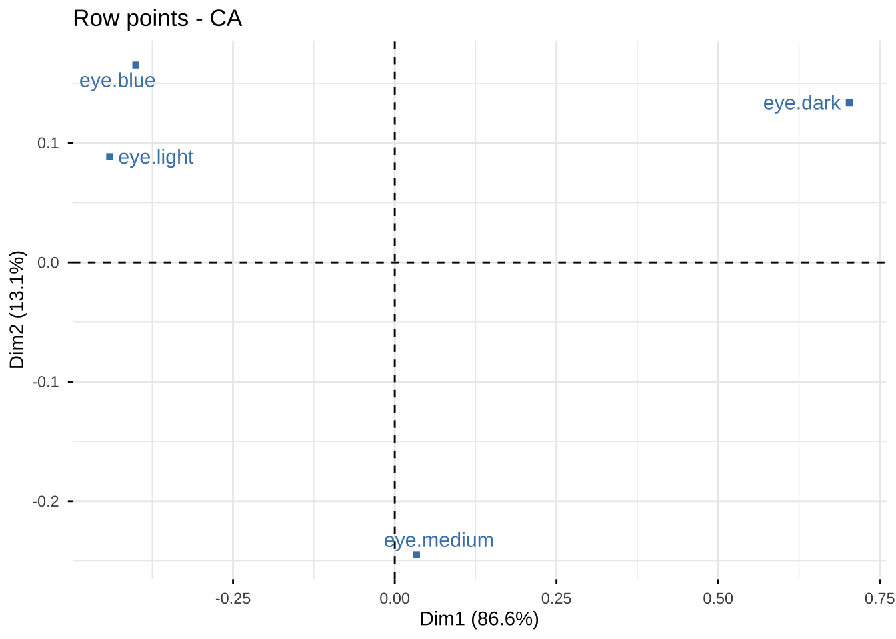
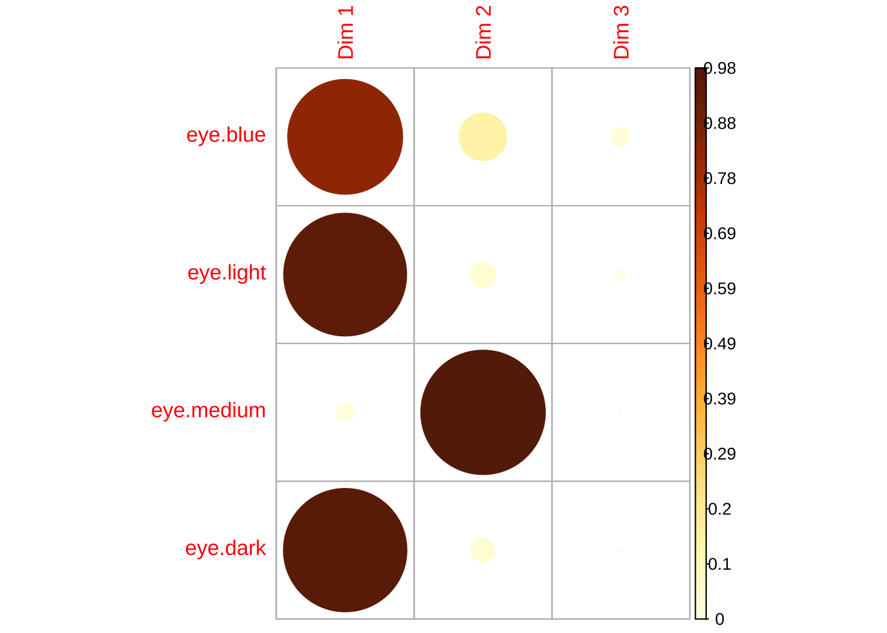
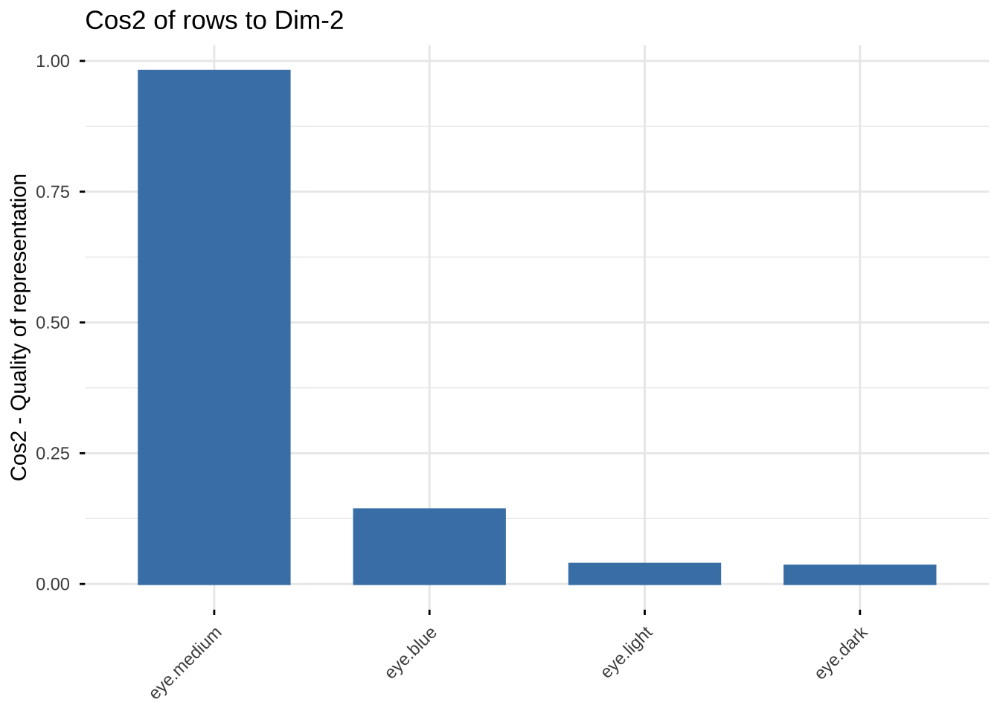
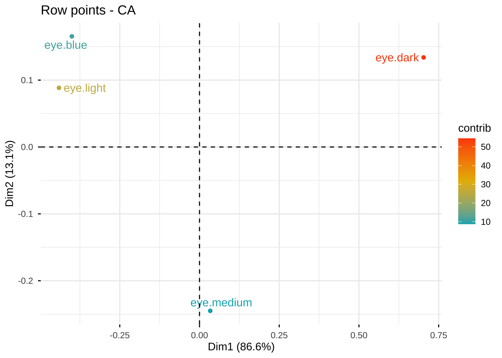
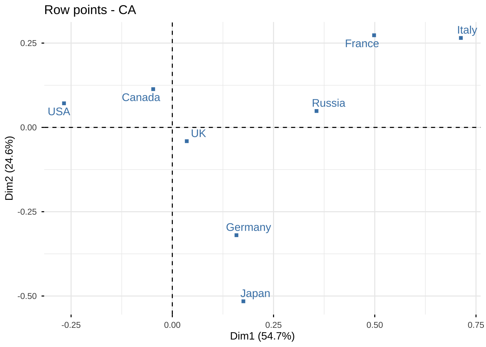
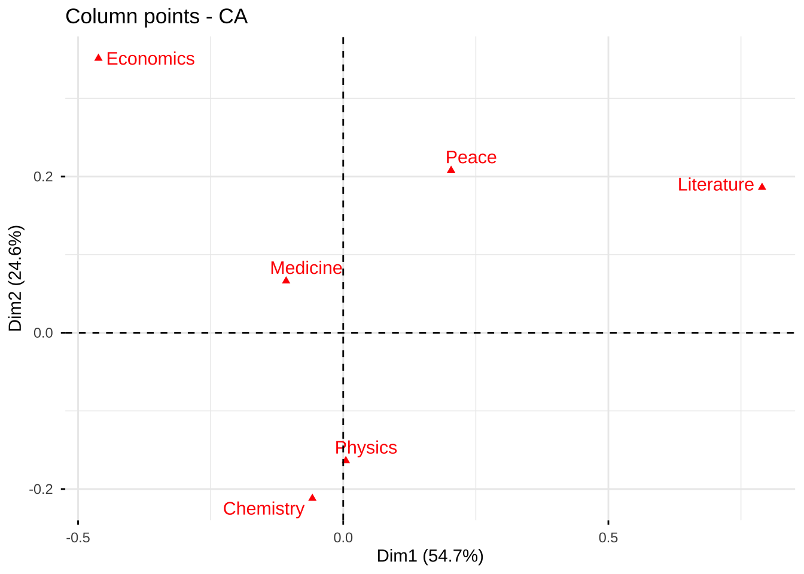
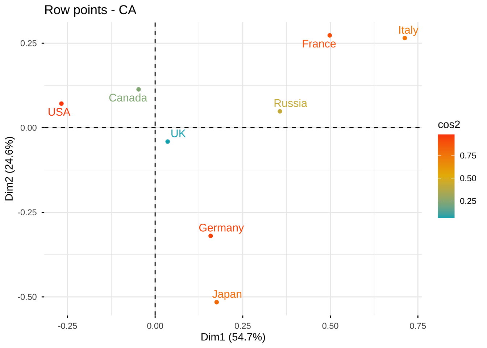
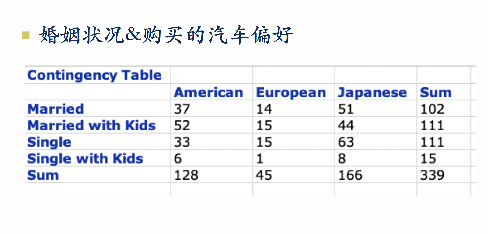

# 安装包
install.packages("tidyverse")
install.packages("FactoMineR")
install.packages("factoextra")
install.packages("MASS")
install.packages("gplots")
install.packages("corrplot")
install.packages("RColorBrewer")8 CA在R中的实现
本章介绍R中的对应分析。
# 加载包
library(tidyverse)
library(FactoMineR)
library(factoextra)
library(MASS)
library(gplots)
library(RColorBrewer)#导入数据，修改行名，列名
library(MASS)
data(caith)
rownames(caith) <- c("eye.blue", "eye.light", "eye.medium", "eye.dark")
colnames(caith) <- c("hair.fair", "hair.red", "hair.medium",
"hair.dark", "hair.black")第1步 独立性检验、列联表可视化
chisq.test(caith)
Pearson's Chi-squared test
data: caith
X-squared = 1240, df = 12, p-value < 2.2e-16mosaicplot(caith,
color = TRUE,
cex.axis = 0.8,
border = 5,
las = 1,
main = "Eye Color and Hair Color")
mosaicplot(caith,
color = RColorBrewer::brewer.pal(4, "Set2"),
cex.axis = 1,
main = "Eye Color and Hair Color",
las = 1)
第2步 计算Compute CA
MASS:corresp()
# 运行对应分析，保留前 2 轴
res <- corresp(caith, nf = 2)
resFirst canonical correlation(s): 0.4463684 0.1734554
Row scores:
[,1] [,2]
eye.blue 0.89679252 0.9536227
eye.light 0.98731818 0.5100045
eye.medium -0.07530627 -1.4124778
eye.dark -1.57434710 0.7720361
Column scores:
[,1] [,2]
hair.fair 1.21871379 1.0022432
hair.red 0.52257500 0.2783364
hair.medium 0.09414671 -1.2009094
hair.dark -1.31888486 0.5992920
hair.black -2.45176017 1.6513565# 检查结果对象有哪些内容
str(res)List of 4
$ cor : num [1:2] 0.446 0.173
$ rscore: num [1:4, 1:2] 0.8968 0.9873 -0.0753 -1.5743 0.9536 ...
..- attr(*, "dimnames")=List of 2
.. ..$ : chr [1:4] "eye.blue" "eye.light" "eye.medium" "eye.dark"
.. ..$ : NULL
$ cscore: num [1:5, 1:2] 1.2187 0.5226 0.0941 -1.3189 -2.4518 ...
..- attr(*, "dimnames")=List of 2
.. ..$ : chr [1:5] "hair.fair" "hair.red" "hair.medium" "hair.dark" ...
.. ..$ : NULL
$ Freq : int [1:4, 1:5] 326 688 343 98 38 116 84 48 241 584 ...
..- attr(*, "dimnames")=List of 2
.. ..$ Row : chr [1:4] "eye.blue" "eye.light" "eye.medium" "eye.dark"
.. ..$ Column: chr [1:5] "hair.fair" "hair.red" "hair.medium" "hair.dark" ...
- attr(*, "class")= chr "correspondence"names(res)[1] "cor" "rscore" "cscore" "Freq" “First canonical correlation(s)” 0.4463684 , 0.1734554 过渡矩阵的前两个奇异值（singular values）
第1轴：0.4463684^2 ≈ 0.1992 ≈ 19.9%
第2轴：0.1734554^2 ≈ 0.0301 ≈ 3.0%
第一轴捕捉到的大约 19.9% 的“卡方变异”（或关联量），第二轴大约 3.0%。两轴合计约 22.9%（≈0.1992+0.0301）。
结论（定性）：第一轴比第二轴解释的关联远多，是主要的结构方向；第二轴较弱，提供一些次要/补充信息。
Row scores / Column scores 这两组表格分别是“行类别”（eye 的各水平）和“列类别”（hair 的各水平）在前两个主轴（canonical axes）上的坐标（scores）。
正/负号表示方向（注意：轴的符号可被整体翻转，不影响相对关系），大小表示在该轴上偏离原点的程度（距离越大，说明该类别在该维度上的区分越显著）。
FactoMineR:CA()
library(FactoMineR)
res.ca <- CA(caith, graph = FALSE)
res.ca %>% summary()
Call:
CA(X = caith, graph = FALSE)
The chi square of independence between the two variables is equal to 1240.039 (p-value = 4.123993e-258 ).
Eigenvalues
Dim.1 Dim.2 Dim.3
Variance 0.199 0.030 0.001
% of var. 86.556 13.070 0.373
Cumulative % of var. 86.556 99.627 100.000
Rows
Iner*1000 Dim.1 ctr cos2 Dim.2 ctr cos2
eye.blue | 25.553 | -0.400 10.719 0.836 | 0.165 12.121 0.143 |
eye.light | 59.557 | -0.441 28.591 0.956 | 0.088 7.629 0.039 |
eye.medium | 20.149 | 0.034 0.187 0.018 | -0.245 65.701 0.981 |
eye.dark | 124.932 | 0.703 60.503 0.965 | 0.134 14.550 0.035 |
Dim.3 ctr cos2
eye.blue -0.064 63.832 0.021 |
eye.light 0.032 34.451 0.005 |
eye.medium -0.006 1.181 0.001 |
eye.dark 0.004 0.536 0.000 |
Columns
Iner*1000 Dim.1 ctr cos2 Dim.2 ctr cos2 Dim.3
hair.fair | 88.134 | -0.544 40.116 0.907 | 0.174 27.131 0.093 | -0.013
hair.red | 3.752 | -0.233 1.450 0.770 | 0.048 0.411 0.033 | 0.118
hair.medium | 17.918 | -0.042 0.352 0.039 | -0.208 57.211 0.961 | -0.003
hair.dark | 92.308 | 0.589 44.915 0.969 | 0.104 9.274 0.030 | -0.010
hair.black | 28.079 | 1.094 13.167 0.934 | 0.286 5.973 0.064 | 0.046
ctr cos2
hair.fair 4.928 0.000 |
hair.red 86.090 0.197 |
hair.medium 0.483 0.000 |
hair.dark 3.075 0.000 |
hair.black 5.425 0.002 |res.ca**Results of the Correspondence Analysis (CA)**
The row variable has 4 categories; the column variable has 5 categories
The chi square of independence between the two variables is equal to 1240.039 (p-value = 4.123993e-258 ).
*The results are available in the following objects:
name description
1 "$eig" "eigenvalues"
2 "$col" "results for the columns"
3 "$col$coord" "coord. for the columns"
4 "$col$cos2" "cos2 for the columns"
5 "$col$contrib" "contributions of the columns"
6 "$row" "results for the rows"
7 "$row$coord" "coord. for the rows"
8 "$row$cos2" "cos2 for the rows"
9 "$row$contrib" "contributions of the rows"
10 "$call" "summary called parameters"
11 "$call$marge.col" "weights of the columns"
12 "$call$marge.row" "weights of the rows" #查看特征值、维度贡献率、累积贡献率
res.ca$eig eigenvalue percentage of variance cumulative percentage of variance
dim 1 0.1992447520 86.5562709 86.55627
dim 2 0.0300867741 13.0703516 99.62662
dim 3 0.0008594814 0.3733775 100.00000#查看过渡矩阵Z的奇异值分解
res.ca$svd$vs
[1] 0.44636840 0.17345540 0.02931691
$U
[,1] [,2] [,3]
[1,] -0.89679252 0.9536227 -2.1884132
[2,] -0.98731818 0.5100045 1.0837859
[3,] 0.07530627 -1.4124778 -0.1894089
[4,] 1.57434710 0.7720361 0.1482208
$V
[,1] [,2] [,3]
[1,] -1.21871379 1.0022432 -0.4271282
[2,] -0.52257500 0.2783364 4.0268545
[3,] -0.09414671 -1.2009094 -0.1103959
[4,] 1.31888486 0.5992920 -0.3450676
[5,] 2.45176017 1.6513565 1.5736976#查看行变量的坐标、贡献、cos2(the quality of each dimension for each point)
res.ca$row$coord
Dim 1 Dim 2 Dim 3
eye.blue -0.40029985 0.16541100 -0.064157519
eye.light -0.44070764 0.08846303 0.031773257
eye.medium 0.03361434 -0.24500190 -0.005552885
eye.dark 0.70273880 0.13391383 0.004345377
$contrib
Dim 1 Dim 2 Dim 3
eye.blue 10.7191765 12.120781 63.831659
eye.light 28.5906733 7.628833 34.450625
eye.medium 0.1867536 65.700687 1.181429
eye.dark 60.5033967 14.549698 0.536287
$cos2
Dim 1 Dim 2 Dim 3
eye.blue 0.83581532 0.14271455 2.147013e-02
eye.light 0.95648915 0.03853918 4.971671e-03
eye.medium 0.01846682 0.98102924 5.039418e-04
eye.dark 0.96492376 0.03503934 3.689437e-05
$inertia
[1] 0.02555277 0.05955678 0.02014947 0.12493199## calculate 第1个行变量的contribution
#计算对应矩阵correspondence matrix ——P
P <- as.matrix(caith/sum(caith))
P %>% round(3) hair.fair hair.red hair.medium hair.dark hair.black
eye.blue 0.061 0.007 0.045 0.020 0.001
eye.light 0.128 0.022 0.108 0.035 0.001
eye.medium 0.064 0.016 0.169 0.076 0.005
eye.dark 0.018 0.009 0.075 0.126 0.016#计算边缘概率、独立性假定下的期望概率
pi. <- rowSums(P)
pi. eye.blue eye.light eye.medium eye.dark
0.1332838 0.2932987 0.3293113 0.2441062 pj. <- colSums(P)
pj. hair.fair hair.red hair.medium hair.dark hair.black
0.27009467 0.05309077 0.39669575 0.25821422 0.02190459 (res.ca$row$coord[,1]^2 * pi.)/sum(res.ca$row$coord[,1]^2 * pi.) eye.blue eye.light eye.medium eye.dark
0.107191765 0.285906733 0.001867536 0.605033967 ## calculate 第1个行变量的cos2
(res.ca$row$coord[1,]^2 )/sum(res.ca$row$coord[1,]^2) Dim 1 Dim 2 Dim 3
0.83581532 0.14271455 0.02147013 #查看列变量的坐标、贡献、cos2(the quality of each dimension for each point)
res.ca$col$coord
Dim 1 Dim 2 Dim 3
hair.fair -0.54399533 0.17384449 -0.012522082
hair.red -0.23326097 0.04827895 0.118054940
hair.medium -0.04202412 -0.20830421 -0.003236468
hair.dark 0.58870853 0.10395044 -0.010116315
hair.black 1.09438828 0.28643670 0.046135954
$contrib
Dim 1 Dim 2 Dim 3
hair.fair 40.1161707 27.1307783 4.9275678
hair.red 1.4498275 0.4113003 86.0896470
hair.medium 0.3516154 57.2108003 0.4834635
hair.dark 44.9152601 9.2737881 3.0745985
hair.black 13.1671264 5.9733330 5.4247232
$cos2
Dim 1 Dim 2 Dim 3
hair.fair 0.9069022 0.09261727 0.0004805329
hair.red 0.7698335 0.03297830 0.1971882209
hair.medium 0.0390998 0.96066829 0.0002319103
hair.dark 0.9694868 0.03022692 0.0002862767
hair.black 0.9343341 0.06400541 0.0016604979
$inertia
[1] 0.088134492 0.003752377 0.017917615 0.092307908 0.028078616## calculate 第1个列变量的cos2
res.ca$col$coord[1,]^2/sum(res.ca$col$coord[1,]^2) Dim 1 Dim 2 Dim 3
0.9069021982 0.0926172689 0.0004805329 第3步 可视化Visualization
碎石图scree plot
#绘制scree plot
library(factoextra)
fviz_screeplot(res.ca, addlabels = TRUE, ylim = c(0, 100))Warning in geom_bar(stat = "identity", fill = barfill, color = barcolor, :
Ignoring empty aesthetic: `width`.# symmetric plot
library(factoextra)
fviz_ca_biplot(res.ca, repel = TRUE)dimdesc(res.ca)$`Dim 1`
$`Dim 1`$row
coord
eye.light -0.44070764
eye.blue -0.40029985
eye.medium 0.03361434
eye.dark 0.70273880
$`Dim 1`$col
coord
hair.fair -0.54399533
hair.red -0.23326097
hair.medium -0.04202412
hair.dark 0.58870853
hair.black 1.09438828
$`Dim 2`
$`Dim 2`$row
coord
eye.medium -0.24500190
eye.light 0.08846303
eye.dark 0.13391383
eye.blue 0.16541100
$`Dim 2`$col
coord
hair.medium -0.20830421
hair.red 0.04827895
hair.dark 0.10395044
hair.fair 0.17384449
hair.black 0.28643670#Rows are represented by blue points and columns by red triangles.行变量绘图 Graph of row variables
row <- get_ca_row(res.ca)
rowCorrespondence Analysis - Results for rows
===================================================
Name Description
1 "$coord" "Coordinates for the rows"
2 "$cos2" "Cos2 for the rows"
3 "$contrib" "contributions of the rows"
4 "$inertia" "Inertia of the rows" row$coord: coordinates of each row point in each dimension (1, 2 and 3). Used to create the scatter plot.
row$cos2: quality of representation of rows.
var$contrib: contribution of rows (in %) to the definition of the dimensions.
#Coordinates of row points
row$coord[,1:2] Dim 1 Dim 2
eye.blue -0.40029985 0.16541100
eye.light -0.44070764 0.08846303
eye.medium 0.03361434 -0.24500190
eye.dark 0.70273880 0.13391383fviz_ca_row(res.ca, repel = TRUE)fviz_ca_row(res.ca, col.row="steelblue", shape.row = 15, repel = TRUE)
#Quality of representation of rows
#The quality of representation of the rows on the factor map is called the squared cosine (cos2) or the squared correlations.
row$cos2 Dim 1 Dim 2 Dim 3
eye.blue 0.83581532 0.14271455 2.147013e-02
eye.light 0.95648915 0.03853918 4.971671e-03
eye.medium 0.01846682 0.98102924 5.039418e-04
eye.dark 0.96492376 0.03503934 3.689437e-05# Color by cos2 values: quality on the factor map
fviz_ca_row(res.ca, col.row = "cos2",
gradient.cols = c("#00AFBB", "#E7B800", "#FC4E07"),
repel = TRUE)
# Change the transparency by cos2 values
fviz_ca_row(res.ca, alpha.row="cos2")#visualize the cos2 of row points on all the dimensions
library(corrplot)
corrplot(row$cos2, is.corr=FALSE)
# Cos2 of rows on Dim.1
fviz_cos2(res.ca, choice = "row", axes = 1)# Cos2 of rows on Dim.2
fviz_cos2(res.ca, choice = "row", axes = 2)
# Cos2 of rows on Dim.1 and Dim.2
fviz_cos2(res.ca, choice = "row", axes = 1:2)#Coordinates of row points
row$contrib Dim 1 Dim 2 Dim 3
eye.blue 10.7191765 12.120781 63.831659
eye.light 28.5906733 7.628833 34.450625
eye.medium 0.1867536 65.700687 1.181429
eye.dark 60.5033967 14.549698 0.536287# Contributions of rows to dimension 1
fviz_contrib(res.ca, choice = "row", axes = 1)# Contributions of rows to dimension 2
fviz_contrib(res.ca, choice = "row", axes = 2, top = 2)#The most important (or, contributing) row points can be highlighted on the scatter plot as follow:
fviz_ca_row(res.ca, col.row = "contrib",
gradient.cols = c("#00AFBB", "#E7B800", "#FC4E07"),
repel = TRUE)
列变量绘图 Graph of column variables
fviz_ca_col(res.ca, col.col = "cos2",
gradient.cols = c("#00AFBB", "#E7B800", "#FC4E07"),
repel = TRUE)筛选画图变量Filter Results
# Visualize rows with cos2 >= 0.9
fviz_ca_row(res.ca, select.row = list(cos2 = 0.9), repel = T)
# Top 3 active rows with the highest cos2
fviz_ca_row(res.ca, select.row = list(cos2 = 3), repel = T)# Select by names
name <- list(name = c("eye.dark", "eye.medium"))
fviz_ca_row(res.ca, select.row = name, repel = T)
# Top 3 contributing rows and columns
fviz_ca_biplot(res.ca, select.row = list(contrib = 3),
select.col = list(contrib = 3), repel = T) +
theme_minimal()应用举例: Nobel Prize
 点击下载数据文件: nobel_prize.xlsx
点击下载数据文件: nobel_prize.xlsx library(readxl)
#读取数据，将其保存为data frame
nobel_prize <- read_excel("nobel_prize.xlsx") %>%
data.frame()
#为nobel_prize添加行名，才能在图中显示出行名标签
rownames(nobel_prize) <- nobel_prize$Country
nobel_prize Country Chemistry Economics Literature Medicine Peace Physics
Canada Canada 4 3 2 4 1 4
France France 8 3 11 12 10 9
Germany Germany 24 1 8 18 5 24
Italy Italy 1 1 6 5 1 5
Japan Japan 6 0 2 3 1 11
Russia Russia 4 3 5 2 3 10
UK UK 23 6 7 26 11 20
USA USA 51 43 8 70 19 66#转换nobel_prize数据结构
library(tidyverse)
nobel_long <- nobel_prize %>%
pivot_longer(c("Chemistry","Economics","Literature",
"Literature", "Medicine", "Peace", "Physics"),
names_to = "field",
values_to = "number")#查看色卡
library(RColorBrewer)
RColorBrewer::display.brewer.all()
#绘制堆栈条形图,先按国家分，再按领域分
nobel_long %>%
ggplot(aes(Country,number,fill = field))+
geom_col(position = "fill")+
theme_bw()+
theme(panel.grid.major = element_blank(),
panel.grid.minor = element_blank())+
labs(title = "Nobel Prize by country and Field",
x = "Country",
y = "Number")+
scale_fill_brewer(palette = "Accent")+
coord_flip()+
theme_minimal()#绘制堆栈条形图,先按领域分，再国家分
nobel_long %>%
ggplot(aes(field,number,fill = Country))+
geom_col(position = "fill")+
theme_bw()+
theme(panel.grid.major = element_blank(),
panel.grid.minor = element_blank())+
labs(title = "Nobel Prize by Field and Country",
x = "Field",
y = "Number")+
scale_fill_brewer(palette = "Spectral")+
theme_minimal() #计算CA
res.ca <- CA(nobel_prize[-1])#查看CA详细结果
summary(res.ca)
Call:
CA(X = nobel_prize[-1])
The chi square of independence between the two variables is equal to 86.75919 (p-value = 2.76733e-06 ).
Eigenvalues
Dim.1 Dim.2 Dim.3 Dim.4 Dim.5
Variance 0.083 0.037 0.022 0.008 0.002
% of var. 54.748 24.600 14.227 5.180 1.245
Cumulative % of var. 54.748 79.348 93.575 98.755 100.000
Rows
Iner*1000 Dim.1 ctr cos2 Dim.2 ctr cos2 Dim.3
Canada | 2.040 | -0.047 0.085 0.035 | 0.113 1.086 0.199 | 0.112
France | 33.080 | 0.498 27.709 0.698 | 0.273 18.536 0.210 | -0.155
Germany | 19.066 | 0.158 4.226 0.185 | -0.320 38.296 0.752 | -0.061
Italy | 25.908 | 0.713 20.316 0.653 | 0.265 6.261 0.090 | 0.282
Japan | 15.089 | 0.176 1.492 0.082 | -0.516 28.653 0.711 | 0.244
Russia | 14.432 | 0.356 7.210 0.416 | 0.049 0.298 0.008 | 0.355
UK | 7.354 | 0.036 0.249 0.028 | -0.041 0.727 0.037 | -0.205
USA | 35.239 | -0.267 38.713 0.915 | 0.071 6.143 0.065 | 0.037
ctr cos2
Canada 1.834 0.195 |
France 10.375 0.068 |
Germany 2.431 0.028 |
Italy 12.251 0.102 |
Japan 11.089 0.159 |
Russia 27.589 0.414 |
UK 31.534 0.929 |
USA 2.897 0.018 |
Columns
Iner*1000 Dim.1 ctr cos2 Dim.2 ctr cos2 Dim.3
Chemistry | 13.469 | -0.058 0.862 0.053 | -0.212 25.471 0.708 | -0.107
Economics | 38.902 | -0.462 26.916 0.577 | 0.351 34.675 0.334 | 0.174
Literature | 58.438 | 0.790 64.353 0.918 | 0.186 7.942 0.051 | 0.117
Medicine | 10.429 | -0.108 3.418 0.273 | 0.066 2.874 0.103 | -0.115
Peace | 16.213 | 0.203 4.443 0.228 | 0.208 10.316 0.238 | -0.226
Physics | 14.758 | 0.005 0.008 0.000 | -0.164 18.723 0.475 | 0.164
ctr cos2
Chemistry 11.181 0.180 |
Economics 14.649 0.082 |
Literature 5.478 0.020 |
Medicine 15.069 0.313 |
Peace 21.169 0.283 |
Physics 32.455 0.476 |#绘制scree plot
library(factoextra)
fviz_screeplot(res.ca, addlabels = TRUE, ylim = c(0, 75))#Coordinates of row pointsWarning in geom_bar(stat = "identity", fill = barfill, color = barcolor, :
Ignoring empty aesthetic: `width`.# 绘制coordinate plot
res.ca$row$coord[,1:2] Dim 1 Dim 2
Canada -0.04723540 0.11346322
France 0.49832819 0.27320639
Germany 0.15840265 -0.31963720
Italy 0.71266566 0.26520715
Japan 0.17551152 -0.51563474
Russia 0.35614910 0.04856816
UK 0.03567203 -0.04083529
USA -0.26748757 0.07142297fviz_ca_row(res.ca, col.row="steelblue", shape.row = 15, repel = TRUE)
res.ca$col$coord[,1:2] Dim 1 Dim 2
Chemistry -0.058167033 -0.21195905
Economics -0.461605434 0.35119852
Literature 0.789819984 0.18598649
Medicine -0.107691667 0.06618674
Peace 0.203420919 0.20777666
Physics 0.004937747 -0.16376482fviz_ca_col(res.ca, col.row="steelblue", shape.row = 15, repel = TRUE)
#绘制cos2 plot
res.ca$row$cos2 Dim 1 Dim 2 Dim 3 Dim 4 Dim 5
Canada 0.03453927 0.199291224 0.19463816 0.0749824057 0.4965489435
France 0.69802441 0.209807695 0.06792086 0.0240922563 0.0001547871
Germany 0.18470295 0.752079219 0.02761260 0.0238343970 0.0117708331
Italy 0.65345071 0.090492296 0.10239997 0.1490887156 0.0045683080
Japan 0.08237415 0.710990924 0.15914111 0.0234728102 0.0240210030
Russia 0.41631131 0.007742082 0.41396123 0.1556342609 0.0063511110
UK 0.02823277 0.036997223 0.92859341 0.0008559733 0.0053206206
USA 0.91545260 0.065268628 0.01780094 0.0003007782 0.0011770496# Color by cos2 values: quality on the factor map
fviz_ca_row(res.ca, col.row = "cos2",
gradient.cols = c("#00AFBB", "#E7B800", "#FC4E07"),
repel = TRUE)
library(corrplot)
corrplot(res.ca$row$cos2, is.corr=FALSE,
col=colorRampPalette(c("blue","white","green"))(100))#绘制contrib plot
res.ca$row$contrib Dim 1 Dim 2 Dim 3 Dim 4 Dim 5
Canada 0.08455223 1.0857665 1.833533 1.94008269 53.437029
France 27.70921162 18.5357993 10.375419 10.10834330 0.270120
Germany 4.22602694 38.2964354 2.431166 5.76383493 11.839516
Italy 20.31620837 6.2614912 12.251198 48.99181647 6.243865
Japan 1.49161410 28.6527237 11.089113 4.49241164 19.121633
Russia 7.21015937 0.2984151 27.588955 28.48923613 4.835537
UK 0.24914716 0.7266209 31.533847 0.07983836 2.064111
USA 38.71308022 6.1427479 2.896768 0.13443649 2.188190fviz_ca_row(res.ca, col.row = "contrib",
gradient.cols = c("#00AFBB", "#E7B800", "#FC4E07"),
repel = TRUE)fviz_ca_col(res.ca, col.col = "cos2",
gradient.cols = c("#00AFBB", "#E7B800", "#FC4E07"),
repel = TRUE)#筛选满足条件的组别
# Visualize rows with cos2 >= 0.8
fviz_ca_row(res.ca, select.row = list(cos2 = 0.8), repel = T)# Visualize columns with cos2 >= 0.8
fviz_ca_col(res.ca, select.col = list(cos2 = 0.8), repel = T)# Top 3 contributing rows and columns
fviz_ca_biplot(res.ca, select.row = list(contrib = 3),
select.col = list(contrib = 3), repel = T) +
theme_minimal()
本章作业
答题要求：将R的命令和输出结果转成图片，上传。
习题1: 发色和眼球颜色 教材P165,例题8.1
要求：
1.1 对行变量和列变量进行独立性检验，独立性检验的卡方检验统计量是多少？P值是什么，你的检验结论是什么？
1.2 绘制碎石图。你提取几个维度？每个维度的贡献分别是多少？
1.3 绘制对应分析图。
1.4 绘制行变量的contribution、cos2的图像。
1.5 绘制列变量的contribution、cos2的图像。列变量的哪几个组别是相对重要的组别？
1.6 从图中可以发现哪些组别关系紧密？
习题2: 收入&满意度

提示：数据请自行录入，可在EXCEL录入好后，再导入R。
要求： 2.1 对行变量和列变量进行独立性检验，独立性检验的卡方检验统计量是多少？P值是什么，你的检验结论是什么？
2.2 绘制碎石图。你提取几个维度？每个维度的贡献分别是多少？
2.3 绘制对应分析图。
2.4 绘制行变量的contribution、cos2的图像。
2.5 绘制列变量的contribution、cos2的图像。
2.6 从图中可以发现哪些组别关系紧密？
习题3: 婚姻状况&汽车偏好

提示：数据请自行录入，可在EXCEL录入好后，再导入R。
要求： 3.1 对行变量和列变量进行独立性检验，独立性检验的卡方检验统计量是多少？P值是什么，你的检验结论是什么？
3.2 绘制碎石图。你提取几个维度？每个维度的贡献分别是多少？
3.3 绘制对应分析图。
3.4 绘制行变量的contribution、cos2的图像。
3.5 绘制列变量的contribution、cos2的图像。
3.6 从图中可以发现哪些组别关系紧密？